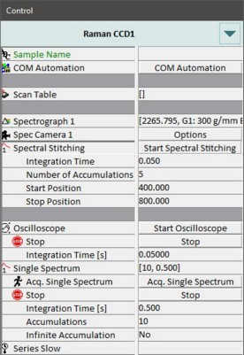
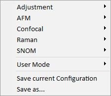
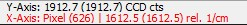
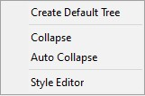

|
控制窗口概述
|
根据所选的配置和安装的硬件，控制窗口提供对大多数硬件和测量参数的访问：

配置

此区域显示当前选择的测量配置。
您可以单击标签或图标来选择特定测量的配置，例如拉曼、AFM等。
控制窗口中的所有参数都保存在配置中。
关于使用预定义配置的更多信息，请参阅 操作指南。
用户模式
您可以在此处根据知识水平设置用户模式。这将隐藏或显示控制窗口中的某些参数。
初学者
仅提供配置的基本参数和功能。
专家
提供配置的所有参数和功能。推荐设置。
超级用户
所有参数均可用，如同在 默认树中一样。仅在您了解操作时使用。
保存当前配置
保存并覆盖当前配置。
另存为...
将当前配置保存到新文件中。
一个配置由两个文件组成。样式文件定义控制窗口的外观，另一个文件包含所有参数。
显示的配置存储在 %userprofile%\WITec\WITec Suite X.X\WITec Control\UserConfigurations。启动时，如果不存在，WITec Control 会从 %allusersprofile%\WITec\WITec Suite X.X\Configs\WITec Control\UserDefaults\UserConfigurations 复制所有配置。
导航
双击左侧的标签或单击小的 +/- 符号以展开/折叠子树，或使用右/左箭头键。可以使用上/下箭头键在参数之间导航。
编辑值
只需单击一行即可编辑参数。通过按住 Ctrl 键并按上/下键来增加/减少值以更改值。对于较大增量，按住 Ctrl + Shift 并使用上/下箭头键。
如果参数名称显示为 红色标签，则可能某个参数错误、超出范围或参数组合无法正常工作。
停止按钮
控制树中的所有停止按钮都将停止当前运行的序列器，无论其位于哪个子部分。这也适用于 主窗口中的停止按钮。
控制树中的监听功能可以通过鼠标在 图谱查看器、 图像查看器 或 视频窗口 中确定某些参数，如位置。

激活的监听功能通过图谱查看器或图像查看器状态栏中轴位置的文本颜色变为红色（左）以及视频窗口中的符号（右）来指示。单击红色文本或视频窗口中的符号可关闭监听功能。
从不
监听功能已关闭。
一次
监听功能已激活。通过鼠标选择值后会自动关闭。
多次
监听功能保持激活状态，直到用户通过将其设置为"从不"或单击图谱查看器或图像查看器状态栏中的红色线将其关闭。
上下文菜单
可以通过在控制树中的任意位置单击鼠标右键来打开。

默认树显示所有可用参数，无论选择哪种配置。
使用配置布局
从默认树切换回来，显示所选配置样式中定义的参数。
---
折叠
关闭所有子树。
自动折叠
如果选中此项，打开新的子树时会自动关闭已打开的子树。
---
样式编辑器
样式编辑器允许使用图形用户界面更改配置的样式。仅限 WITec 内部使用！
参数组
您可以在此处找到有关特定参数组的信息。如果参数描述为 灰色，则该参数仅在默认树中可用。